MemBench: Memorized Image Trigger Prompt
Dataset for Diffusion Models
Anonymous Author
Anonymous Institution NeurIPS 2024 Benchmark and Dataset
Trigger prompts, Generated images, and Reverse Image Search API Searched Images
We present the trigger prompts identified by our algorithm along with (a) the generated images from Stable Diffusion using these prompts. Additionally, for each image, we provide (b) the corresponding images presumed to be from the training data, identified using the Reverse Image Search API. The layout repetition of the generated images and those found through the API strongly indicate that Stable Diffusion has memorized the training data. Moreover, we have confirmed that the majority of these images are currently available for commercial sale. We leveraged DDIM Scheduler to generate images.
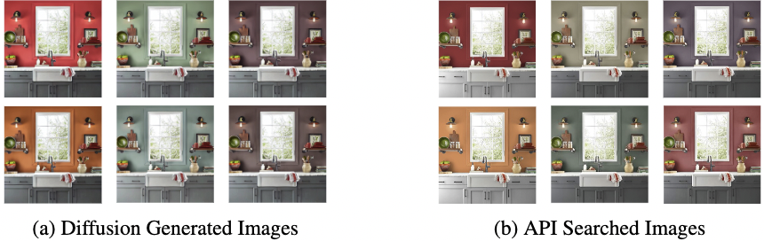
Trigger Prompt: "Cozy Kitchen Painted"
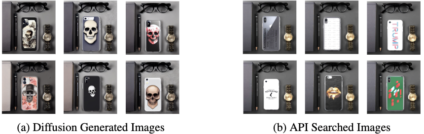
Trigger Prompt: "Iphone Case Covered With Skull"
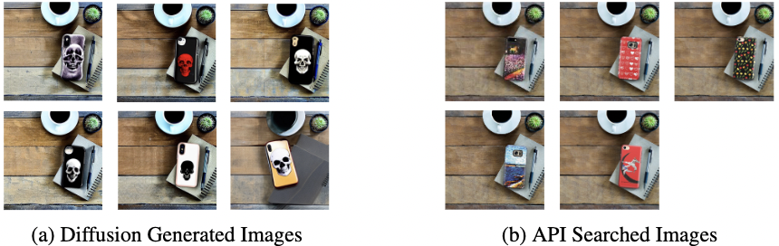
Trigger Prompt: "Iphone Case Covered With Skull"
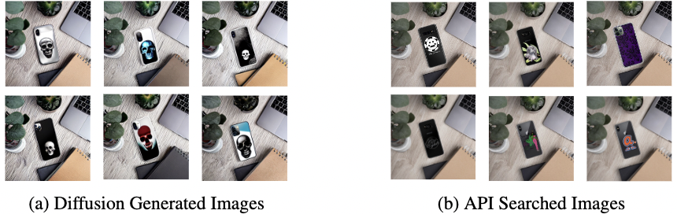
Trigger Prompt: "Iphone Case Covered With Skull"
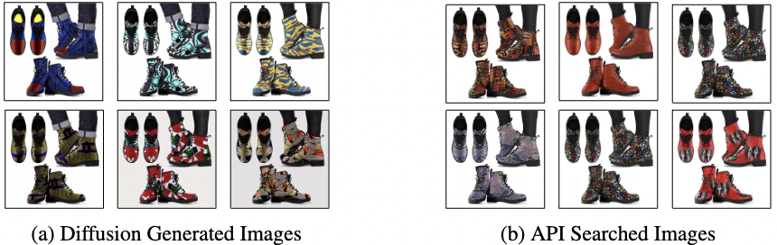
Trigger Prompt: "Knit Line Africa American Quilt House Lace Boots"
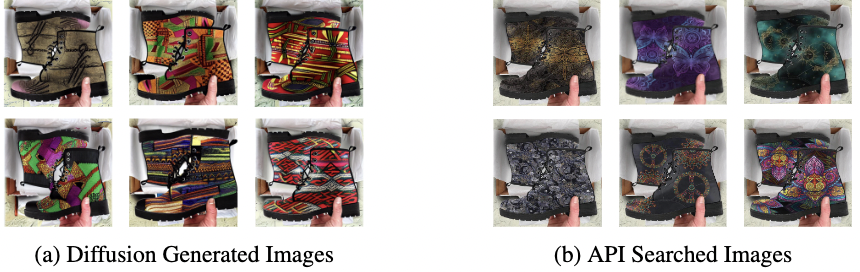
Trigger Prompt: "Knit Line Africa American Quilt House Lace Boots"
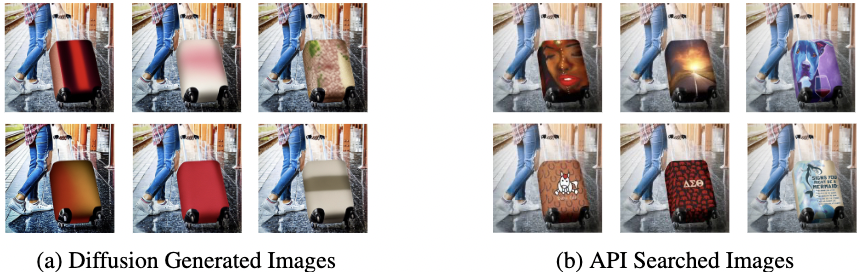
Trigger Prompt: "Travel Luggage Cover"
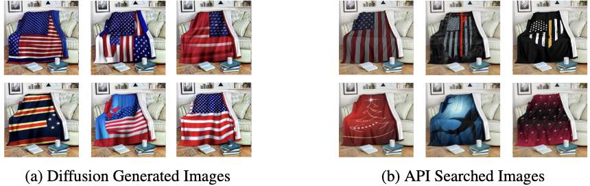
Trigger Prompt: "United States Throw Blanket"
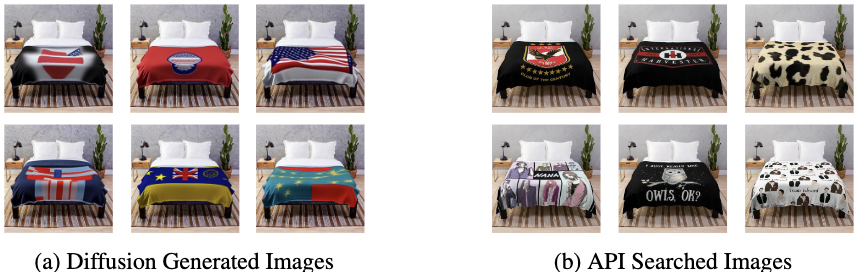
Trigger Prompt: "United States Throw Blanket"
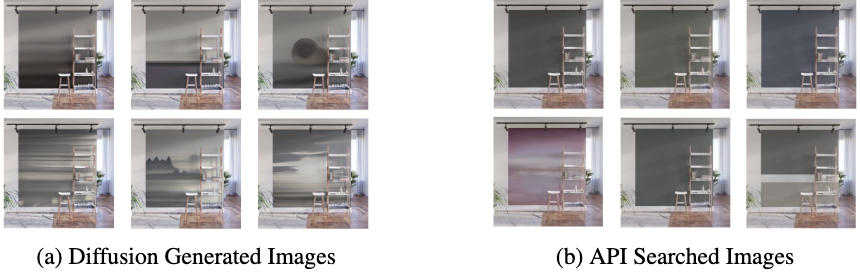
Trigger Prompt: "Grey Standard Wall Mural"
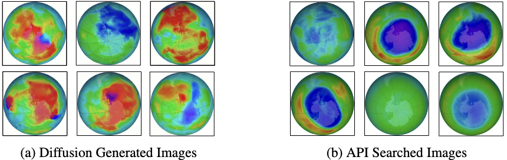
Trigger Prompt: "Uranus Center As Ozone Temperature Map"
3000 Trigger prompts and generated images
We additionally provide 3000 trigger prompts and four images generated by Stable Diffusion for each prompt. The repetition of generated images indicates that a specific image has been memorized. We leveraged DDIM Scheduler to generate images.